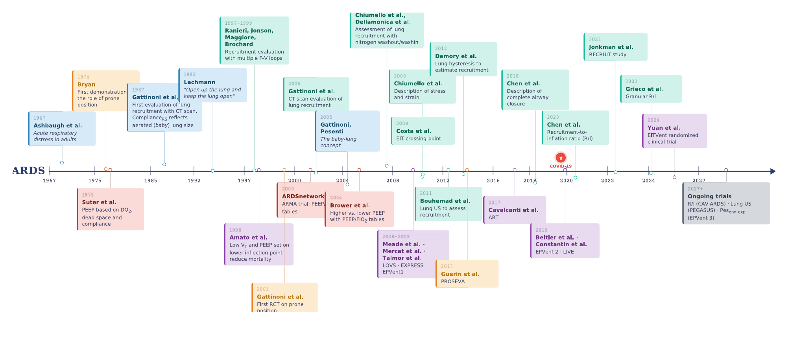
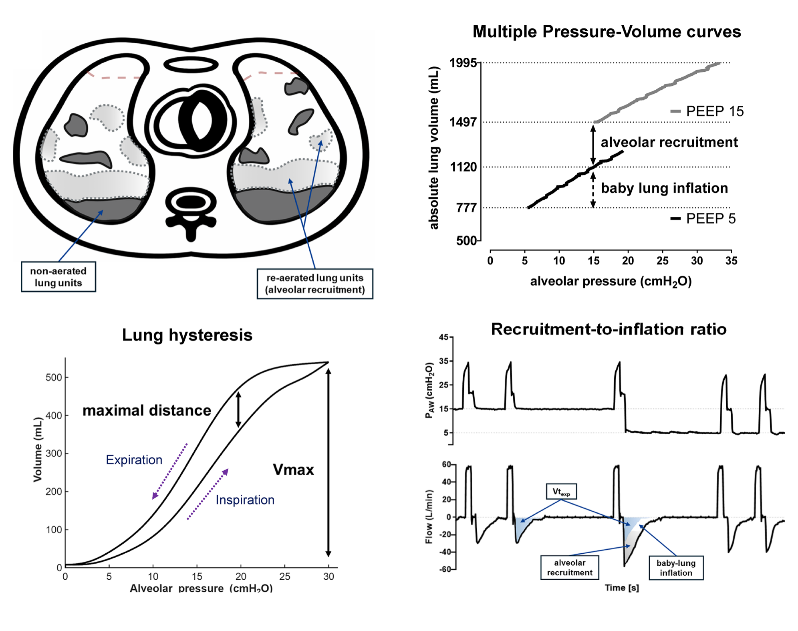
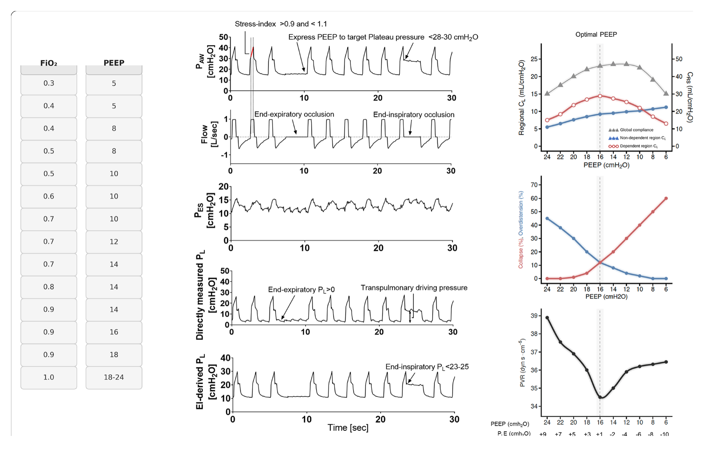

本ページで使用する略語一覧
| 略語 | 正式名称 — 日本語訳 |
| PEEP | Positive End-Expiratory Pressure — 呼気終末陽圧 |
| ARDS | Acute Respiratory Distress Syndrome — 急性呼吸窮迫症候群 |
| VILI | Ventilator-Induced Lung Injury — 人工呼吸器関連肺傷害 |
| P/F | PaO₂/FiO₂ ratio — 動脈血酸素分圧／吸入酸素濃度比（酸素化指標） |
| R/I ratio | Recruitment-to-Inflation ratio — リクルートメント／インフレーション比 |
| AOP | Airway Opening Pressure — 気道開放圧（気道閉塞を開く臨界圧） |
| PL | Transpulmonary Pressure — 経肺圧（肺を実際に広げる圧） |
| PES | Esophageal Pressure — 食道内圧（胸腔内圧の代用） |
| Pplat | Plateau Pressure — プラトー圧（吸気終末気道内圧） |
| EIT | Electrical Impedance Tomography — 電気インピーダンス・トモグラフィ |
| CT | Computed Tomography — コンピュータ断層撮影 |
| LUS | Lung Ultrasound (Score) — 肺エコー（スコア） |
| PV curve | Pressure–Volume curve — 圧–量曲線 |
| EELV / EELI | End-Expiratory Lung Volume / Impedance — 呼気終末肺気量／同インピーダンス |
| CRS | Respiratory System Compliance — 呼吸器系コンプライアンス |
| RV / LV | Right / Left Ventricle — 右室／左室 |
| PVR | Pulmonary Vascular Resistance — 肺血管抵抗 |
| FRC | Functional Residual Capacity — 機能的残気量 |
| NMBA | Neuromuscular Blocking Agent — 神経筋遮断薬 |
この総説のひとこと（Take home message）
中等度〜重度ARDSのPEEP設定は2段階アプローチで考えると整理しやすい。第1段階：リクルータビリティ（recruitability＝肺がPEEPで開く余地）を評価する。低ければPEEPは 5〜8 cmH₂O 程度に抑えてよい。意味のある余地があれば高PEEPを検討する。第2段階：リクルータブルな患者で、リクルートメント・過膨張・血行動態のバランスを取るようにPEEPを滴定する（呼吸メカニクス・経肺圧・画像由来の局所メカニクスを統合）。ガス交換・全体コンプライアンス・駆動圧といった従来指標は、単独ではリクルータビリティの代用として不十分なことがある。
SECTION 1 「至適PEEP」概念の60年
PEEPはARDSの人工呼吸管理の要であり続けている。50年以上前、「至適PEEP（optimal PEEP）」は、酸素運搬（心拍出量×動脈血酸素含量）が最大・死腔率が最小・静的コンプライアンスが最大となる呼気終末圧として定義された。つまり当初の主目的はガス交換の是正だった。
しかしARDSの病態理解が進むと、PEEPの主目的はガス交換の是正から VILI（人工呼吸器関連肺傷害）の軽減へとシフトした。酸素化を改善する介入が必ずしも転帰を改善せず、肺を傷つければ生存をむしろ悪化させうると認識されたためである。これはPEEPに特に当てはまる。低酸素血症は人工呼吸調整の主たる引き金であり続け、PEEPの酸素化への効果は観察しやすい一方で、肺保護への効果ははるかに観察しづらい。PEEP・リクルートメント・過膨張・VILIをつなぐ機序は生理学的に複雑で、ベッドサイドで確実に評価するのは難しい。
臨床的含意：「酸素化が良くなった＝良い設定」とは限らない。PEEPは肺保護を狙う設定であり、酸素化はその副産物にすぎないことを常に意識する。
SECTION 2 なぜRCTの結果は食い違うのか
未選択のARDS患者を対象に高PEEP vs 低PEEPを比較したRCTは、臨床転帰について一致しない結果を出してきた。その結果、推奨は一貫せず、実臨床のばらつきも大きい。理由は個人間の不均一性（heterogeneity）にある。ベッドサイドで人工呼吸を設定するために使う従来指標（ガス交換・呼吸メカニクス）は、集団としての平均的なPEEP応答は反映するが、個々の患者のリクルータビリティ評価・PEEP選択の代用としては不正確である。
個別化PEEP滴定のRCTが進行中である一方、本総説の狙いは、PEEPを「リクルータビリティの評価」と「PEEPの選択」という、別個だが密接に関連する2つのプロセスを含む生理学ドリブンの枠組みの中に位置づけることにある。
FIGURE 1 ARDSの60年 — 肺リクルートメントとPEEPをめぐる主要マイルストーン

SUMMARY 第1章のキーメッセージ
SECTION 3 リクルートメント vs 過膨張 — PEEPの正味効果
PEEPの核心的な生理効果は肺気量の増加である。これは2つの機序で起こる。(a) 虚脱していたリクルータブルな肺胞単位の再開通＝肺胞リクルートメント、(b) すでに含気している領域の容量増加＝肺胞過膨張（overinflation）。
リクルートメントが起これば、一回換気量がより大きな肺容量に分散され、動的ストレイン（一回換気量／機能的肺サイズ）が低下してVILIが軽減する。不安定な肺胞単位の反復的な虚脱・再開通を防ぐことでアテレクトラウマを抑え、より均一な換気を促す。一方、リクルートメントが乏しい／無い場合は、PEEPによる過膨張が優位となり、含気組織のストレスを増やして炎症を助長する。
したがってPEEPの正味の利益は、リクルートメントと過膨張のバランスに依存し、これは個人ごとに大きく異なる。このバランスはベッドサイドで評価しづらく、過膨張優位のVILIに弱いか、虚脱（アテレクタシス）優位のVILIに弱いかという、不完全にしか特徴づけられていない表現型によって異なる。
SECTION 4 気道閉塞（airway closure）という落とし穴
完全気道閉塞はPEEP応答のベッドサイド評価をさらに複雑にする。これは呼気時の気道虚脱により、近位気道と肺胞の交通が絶たれる現象で、ARDSでは過去10年で本格的に検討されるようになった。完全気道閉塞があると、次の吸気は臨界の気道開放圧（AOP）を超えて初めて始まる。結果として、呼気終末に気道で測る圧はもはや真の肺胞圧を反映しなくなる。
気道閉塞はARDS患者の30〜50%でみられ、特に肥満で多い。AOPは低流量送気（5 L/分）を低呼吸数で行い、圧–時間または圧–量曲線上の変曲点（初期の傾きが回路コンプライアンスを反映する点）として同定・測定できる。あるいはコンダクティブ圧（conductive pressure）法を一回換気で行うが、これには十分に高い気道圧波形のサンプリング速度（100〜200 Hz）が必要である。いずれの場合も低呼吸数（3〜5回/分）が、動的過膨張の干渉を避けるために必須である。
なぜ重要か：AOPを下回るPEEPをいじっても肺気量は変わらず、駆動圧が偽性に高く・コンプライアンスが偽性に低く見え、呼吸メカニクスの解釈を誤らせる。PEEPは常にAOPより上に保つ。低一回換気量＋「吸気側PV曲線の下方変曲点より上のPEEP」で死亡率改善を示した2試験の多くで、その下方変曲点はおそらくAOPだった。
SECTION 5 循環への影響 — 高すぎても低すぎても右室が傷む
過度に高いPEEP：平均胸腔内圧を上げることで静脈還流とリンパドレナージが減少し、右室前負荷が低下する。同時に肺胞の過膨張が肺毛細血管を圧迫し、右室後負荷を増やす。これが心拍出量回復のための輸液を誘発し、正の水分バランスに傾きやすい。正の水分バランスは肺水腫・人工呼吸期間延長・ICU滞在延長・死亡率上昇と関連する。
不十分なPEEP：逆の極では、虚脱した肺胞が肺血管を直接圧迫し、低酸素性血管収縮で増幅されて肺血管抵抗を上げ、右室後負荷を著明に増やす。これが右室ストレインに寄与し、急性肺性心を引き起こしうる。高PEEPに比べ低PEEPの血行動態への影響は研究が少なく、臨床的重要性が過小評価されている可能性が高い。
ARDS自体が微小血管閉塞と低酸素性血管収縮を特徴とするため、右室機能障害を伴う肺性心は患者の最大30%と高頻度で、高PEEPでさらに悪化しうる。右室拡大・機能障害は心室相互依存を介して左室充満を下げ、心拍出量と全身灌流を損なう。
リクルータビリティが循環影響を左右する：リクルータビリティが乏しい肺に高PEEPをかけると、主に右室後負荷増加・前負荷低下・機能障害となる。逆にリクルータビリティが大きければ、FRC回復と低酸素性血管収縮の解除でPVRが下がり、有害な血行動態影響が緩和・あるいは有益に転じる。PEEP滴定時は右室機能に着目した血行動態モニタリングを併用する。
SUMMARY 第2章のキーメッセージ
SECTION 6 ガス交換（死腔・酸素化）
死腔率：PEEPによる死腔率の変化は「リクルートメント vs 過膨張」の間接マーカーとして提案されてきた。非換気領域がリクルートされれば baby lung の過膨張が減り換気効率が改善し、過膨張優位なら無効換気が増える。しかしPaCO₂・換気比など死腔の代用は精度が低く、臨床応用は限られる。
酸素化：PEEP応答の評価に最もよく使われる。集団レベルでは高PEEPへの酸素化応答は良い転帰と関連する。しかしこれは酸素化がリクルートメントを確実に反映することを意味しない。個々の患者では解釈はさらに難しい。
- リクルートメントが起きても、敗血症などで低酸素性血管収縮が障害されていると、肺胞を機械的に開いても換気血流不均衡の改善に即座につながらず、酸素化は改善しないことがある。
- 逆に、リクルートメントなしに酸素化が改善することもある。心拍出量の低下は非換気シャント領域の血流を減らしシャント率を下げ、含気量が変わらなくてもP/Fを改善しうる。
- 卵円孔開存はARDSの20%に報告され、高PEEPで右房圧が上がると右→左シャントが悪化し、有意なリクルートメントがあっても酸素化をむしろ悪化させうる。
これらの機序から、PEEPによる酸素化変化は個人レベルでのリクルートメントの代用としては信頼できない。
SECTION 7 呼吸メカニクス（コンプライアンス・駆動圧）
PEEP変更に伴うコンプライアンス・駆動圧の変化は、リクルートメントの代用として頻用される。高PEEPでコンプライアンスが上がれば baby lung の拡大＝リクルートメントと解釈されてきた。この概念は集団レベルでは妥当でも、個々の患者の臨床判断には信頼性を欠く。コンプライアンス変化は必ずしも正味のリクルートメントを反映せず、局所の不均一性を考慮しない全体推定にすぎない。
tidal recruitment（一回換気性リクルートメント）の罠：高リクルータビリティ患者を低PEEPに置くと、肺胞が吸気で開き呼気で再虚脱する。新たに開いた単位は見かけ上きわめて高コンプライアンスで、低PEEPで全体コンプライアンスが高く見える。PEEPを上げるとtidal recruitmentが減/消失し、逆説的に測定コンプライアンスが下がり駆動圧が上がることがある。これを「過膨張」と誤読してはならない。メカニクス単独でのリクルータビリティ評価の限界を示す。
SECTION 8 肺形態（diffuse vs focal）
びまん性（diffuse）ARDSは平均的によりリクルータブルで、限局性（focal、典型的には背側・後方の硬化）はリクルータビリティが低く、PEEPを上げると過膨張に弱い。「びまん性に高PEEP・限局性に低PEEP」という形態テーラード戦略をRCTで検証したところ全体としては陰性だった。決定的だったのは、21%の患者が誤分類され、真の形態と不整合な換気戦略は死亡率上昇と関連した点である。安全な実装には高解像度の表現型分類か、ルーチンではない頑健な自動分類が必要であり、形態は生理学的測定の代替ではなく文脈的手がかりとみなすべきである。
SUMMARY 第3章のキーメッセージ
SECTION 9 まずP/Fで振り分ける
酸素化はPEEP応答の評価には不完全でも、「積極的な高PEEPが不要な患者を除外する」のには役立つ。P/Fが一貫して 200 mmHg を超える患者（重症度評価への干渉を避けるため、できれば PEEP=5 cmH₂O で評価）は、通常、肺胞虚脱が少なくリクルータビリティが低い。この場合、高PEEPの害を正当化できる可能性は低い。
逆にP/Fが 200 mmHg 未満の患者は、リクルートメントの余地が大きい可能性が高く、高PEEPレベルを検討しうるサブグループである。メタ解析でも、高PEEPの潜在的な臨床利益は中等度〜重度ARDSに限られる。
SECTION 10 2ステップの構造
ステップ1（リクルータビリティの確認）：まず「意味のあるリクルートメントの余地があるか」を確かめる。評価にあたっては常に低流量送気で気道閉塞を評価し、AOPがあればそれを下回るPEEPは使わない。ベッドサイド指標は臨床的に持続可能なPEEP範囲内でリクルータビリティを記述する。より高い気道圧ではさらにリクルートが起こりうるが、それを狙うのは避けるべき（許容ストレス限界を超え、積極的な高圧リクルートメント手技は死亡率上昇と関連）。
ステップ2（至適PEEPの決定）：リクルータビリティが示されたら、目標はリクルートメント・過膨張・血行動態の最良の妥協点となるPEEPを決めることに移る。滴定の間も、適切なガス交換と血行動態の安定はベッドサイドの絶対条件であり、この枠組みは従来の安全限界を置き換えるのではなく、その内側で機能する。
腹臥位との関係：PEEP滴定は腹臥位の代わりではなく補完である。腹臥位は肺形状と胸腔内圧分布を変え、局所コンプライアンスを均一化し背腹側勾配を減らすことで、PEEPの利益を最大化し害を抑える。仰臥位と腹臥位で肺メカニクスは大きく異なりうるため、体位変換のたびにリクルータビリティとPEEP滴定を再評価する。
SECTION 11 例外：高度肥満
高度肥満（BMI≧35 kg/m²）の患者は、酸素化に基づく重症度に関わらず、呼気終末経肺圧（PL）≈0 cmH₂O を目標にPEEPを設定すると恩恵を受けうる。これは「高PEEPは主に低酸素血症が強い患者で検討する」という従来の枠組みから外れる。重度肥満では軽症ARDSでも、あるいは酸素化ベースの重症度閾値とは無関係に高PEEPを要しうるためである。
ALGORITHM PEEP選択の2ステップ・アルゴリズム
全経過で気道閉塞によるAOPを評価し、PEEPはAOPより上に保つ。血行動態耐性（特に右室機能）を全経過で監視する。高度肥満では酸素化重症度に関わらず呼気終末PL≈0 cmH₂O を目標にしうる。AOP＝気道開放圧、PL＝経肺圧、Pplat＝プラトー圧、R/I＝リクルートメント／インフレーション比。
SUMMARY 第4章のキーメッセージ
SECTION 12 組織リクルートメント — CT（参照法）
定量CTは組織リクルートメントを定量する参照法で、気道圧を低い基準値から高い値へ上げたときの非含気コンパートメントの減少として定義する。多くのプロトコルでHounsfield単位の閾値でボクセルを分類する。ただしCT由来のリクルータビリティは本質的に密度ベースであり機能的ではない。固定カットオフは周期的開閉する不安定単位の同定、浸出（flooding）と虚脱の区別、気道閉塞・局所換気・stress raiserの定量はできない。さらに搬送リスク・再現性の限界・被曝でルーチン運用は限られる。それでもCT研究は「リクルータビリティは患者間で大きく異なり、PEEPの正味効果はリクルートメントと過膨張のバランスで決まる」という鍵概念を確立した。
SECTION 13 ガスリクルートメント — R/I比とヒステレシス
ベッドサイドの代用は、PEEPを上げたときに得られる追加肺気量（ΔEELV）を推定し、その容量増加がすでに開いている baby lung の単純な弾性的伸展で説明できる以上かを推し量る。操作的には2要素を組み合わせる：①ΔEELVの推定（最も実用的にはPEEP低下後の呼気量の累積変化＝デリクルートメントを過去のリクルートメントの推定に使う）、②baby lung の予測伸展量の推定（等圧PV曲線比較、またはコンプライアンス×ΔPEEPの簡易近似）。
R/I比（recruitment-to-inflation ratio）はこの論理の最も実用的なベッドサイド実装で、「リクルートされた容量」を baby lung サイズの推定で正規化する。手技：高PEEPで約10〜15分安定後、呼吸数を4〜8回/分に下げて完全呼出を確保し、PEEPを10 cmH₂O（またはAOPまで）下げ、低下中に人工呼吸器が表示する呼気量でΔEELVを推定する。伸展成分は低PEEPでのメカニクス（CRS×ΔPEEP）から推定し、リクルートメントをコンプライアンス自体に対して表す。R/I＜0.5 はリクルートメントの余地が低いことを示し、それより高い値は安全制約内での構造的なPEEP探索を支持する。ほぼ全ての人工呼吸器で実施でき、肺ストレイン・換気血流マッチ・機械的パワー・血行動態へのPEEPの影響を予測する助けになる。
低流量吸気/呼気PV ループ（ヒステレシス）：吸気肢と呼気肢の最大容量分離を最大容量（Vmax）で正規化したnormalized maximal distanceもベッドサイド指標となる。R/I比とよく相関し、実用的には40〜45%付近が、意味のあるリクルータビリティと整合する注意閾値として提案されている。
ガス指標の非対称性：これらは組織再含気ではなく容量増加を測る。価値は非対称で、ガスリクルートメントもヒステレシスも乏しければ高PEEPは支持されない（除外に強い）が、大きくても「リクルートメントがありうる」を示すにとどまり、容量増加は不均一肺の含気単位の単なる伸展を反映しうるため、より広い生理/安全評価で確認を要する。
SECTION 14 画像系の代用 — 肺エコー（LUS）とEIT
LUS（肺エコースコア）：主に含気の変化を追う。ガスリクルートメントとは相関するが組織リクルートメントとは相関せず、局所過膨張には鈍感。同じLUS改善でも、患者ごとに全く異なるリクルートメント・過膨張のトレードオフを反映しうる。lung slidingから過膨張を推定する自動定量解析は、多角的評価の中で形態を補強しうる。
EIT：補完的な洞察を与える。PEEPによるEITベースの虚脱変化がリクルータビリティと関連づけられ、2つのPEEP間のリクルート容量を ΔEELI − EIT由来コンプライアンス×ΔPEEP として直接推定できる（PV曲線アプローチのベッドサイド代用に類似）。EIT由来コンプライアンス自体で正規化するとEITベースR/Iが得られる。
TABLE 1 リクルータビリティ評価法の一覧（個別判断の閾値）
| 手法 | 複雑さ／機器 | 意味する内容 | 高リクルータビリティの目安 |
|---|---|---|---|
| P/F 酸素化 | 低／標準的人工呼吸器＋血液ガス | ガス交換 | PEEP増で有意な改善（低なら改善なし/わずか） |
| 死腔／PaCO₂ 容量カプノ等 | 低〜中／標準器＋カプノグラフィ | ガス交換 | PEEPで死腔/PaCO₂が有意に低下＝換気血流改善を示唆 |
| 形態 X線・エコー・CT | 中／画像 | 形態 | びまん性＝高／限局性＝低リクルータビリティ |
| R/I比 ガスリクルート | 中／標準的人工呼吸器 | ガスリクルートメント | R/I≧0.5（R/I＜0.5＝低） |
| ヒステレシス 正規化最大距離 | 中〜高／PVツール付き人工呼吸器 | ガスリクルートメント | 40〜45%付近を注意閾値 |
| 多重PV曲線 等圧アップシフト | 中〜高／PVツール＋解析 | ガスリクルートメント | 同一肺胞圧（≈20 cmH₂O）でのPEEP間の容量増加（上方移動） |
| EITベースR/I 局所 | 高／EIT機器 | ガスリクルートメント | 2 PEEP間のリクルート容量をCRS,EITで正規化（従来R/Iより高めの閾値0.8〜1） |
| EIT虚脱変化 局所 | 高／EIT機器 | EIT評価の虚脱 | ＞40%＝高／25〜40%＝中／＜25%＝低（PEEP 24と6間の虚脱） |
| 定量CT 組織 | 非常に高／CT＋解析 | 組織リクルートメント（参照法） | PEEP間の非含気組織量の直接的な減少 |
※「複雑さ」「機器」列は、標準的人工呼吸器モニタリングから高度ツール（EIT・食道内圧・CT）までの所要リソースを示す。閾値は本文記載の値のみを転記。
FIGURE 3 ベッドサイドでのリクルータビリティ評価法

SUMMARY 第5章のキーメッセージ
リクルートメントの余地が良好な患者では、PEEP滴定の優先は肺保護のままである。逆にリクルータビリティが乏しければ、PEEPは低め（≈5〜8 cmH₂O）に保つのが最善で、「高PEEP選択」戦略は価値を加えにくい。以下の手法（Fig 4・Table 2）は、意味のあるリクルータビリティがある（少なくとも皆無でない）患者で高PEEPを調整するためのものであり、ほとんどリクルートしない肺で高PEEPを正当化するものではない。
SECTION 15 PEEP–FiO₂ 表
必要なFiO₂に対応するPEEPを組み合わせる標準的なベッドサイド方式。「より重い低酸素血症は平均的に高PEEPが有益な患者を同定する」という実用的仮定に基づく。低PEEP表と高PEEP表があるが、どちらが優れるかのエビデンスはない。ただし低PEEP表が主要試験の対照群として用いられ、より多くの転帰データを蓄積している。強みは実用性（単純・再現可能）で、いかなる代替戦略もRCTで低PEEP表に一貫して優越していないため、現在の参照アプローチであり続ける。弱みは概念的で、低酸素血症・酸素化応答・リクルータビリティの結びつきは集団レベルでは成り立っても、個々の患者では不正確でありうる。
SECTION 16 メカニクス系 — EXPRESS戦略・ストレス指数
EXPRESS戦略：一回換気量を低く保ちつつ、目標プラトー圧（28〜30 cmH₂O）に達するようPLATEAU「上限」までPEEPを上げる。臨床的には中等度〜重度ARDSで平均PEEP 15 cmH₂O・平均プラトー圧 28 cmH₂O となり、死亡率減少はないものの臨床的に重要な転帰でベネフィットのシグナルを示した数少ない戦略の一つ。限界：①プラトー圧は肺と胸壁のエラスタンスを混同し、同じプラトー圧でも肺ストレスは大きく異なりうる（30以下でも過剰ストレスが起こりうる）、②リクルータビリティは上限まで線形ではなく、ある閾値を超えると追加圧は過膨張を招く、③同じプラトー目標は硬い肺ほど低PEEPになり、より必要な所でより少ないPEEPという逆説。現在RCT（NCT03963622）で検証中。
ストレス指数：定流量従量換気での気道圧–時間曲線の形から導く。＞1は吸気進行に伴うコンプライアンス低下＝過膨張、＜1はtidal recruitment/derecruitment を示唆し、ストレス指数≈1（おおむね0.9〜1.1）でより線形＝より傷害性が低い吸気を示す。波形解析の専用機器を要し、ストレス指数ガイドPEEPの転帰データは不足。
SECTION 17 最良コンプライアンス／最低駆動圧（漸減PEEPトライアル）
漸減PEEPトライアルで「最良コンプライアンス」「最低駆動圧」に対応するPEEPを同定する方法は広く使われる。理屈は「虚脱が開けばコンプライアンスは改善し、過膨張が優位になると悪化する」。しかしベッドサイドではしばしばノイズが多く誤導的：コンプライアンス・駆動圧は局所の過膨張とリクルートメントを区別できない全体指標で、変化は小さく解釈が難しい。低PEEPでのtidal recruitmentが逆説的にコンプライアンスを上げるため、PEEP増がtidal recruitmentを消してコンプライアンスを下げても、必ずしも過膨張を意味しない。
RCTの教訓：大規模多施設試験では、この方法を高圧リクルートメント手技と組み合わせると臨床転帰を悪化させうると示された（固定リクルートメント手技・画像ガイドなし・施設間の習熟度差などが議論の対象）。別のRCTではリクルートメント手技なしで適用した場合は臨床転帰に影響なし。コンプライアンス・駆動圧の変化は単独でリクルータビリティ評価・PEEP選択に使わず、他の生理シグナルと統合する。
SECTION 18 経肺圧（PL）ベース — 食道内圧
食道内圧（PES）モニタリングは、肺を実際に広げる圧＝経肺圧（PL）の推定を可能にする。ただしPLの解釈は重力勾配で複雑になる。仰臥位では背側（依存性）で胸腔内圧がより陽性、腹側（非依存性）でより陰性のため、PLは腹側で高く背側で低い。PLの算出には2法ある：
- 直接測定（呼気終末PL = PEEP − PES）：食道の中〜背側位置を利用し、無気肺になりやすい領域の圧を推定。呼気終末PL≈0 cmH₂O を目標にすると比較的高いPEEPとなり、重力性無気肺を抑える。
- エラスタンス由来（吸気終末PL = プラトー圧×肺エラスタンス／呼吸器系エラスタンス）：最大肺ストレスを評価し、腹側・非依存領域のPLをより反映。吸気終末上限 23〜25 cmH₂O が腹側過膨張を抑える最大許容閾値（肺ストレス25 cmH₂O が全肺気量に相当することに基づく保守的閾値）。
臨床応用の難しさ：初期データは呼気終末PL陽性化を支持したが、大規模試験では一貫した転帰改善を示さなかった。多くの患者で、吸気終末PLの上限なしに呼気終末PL目標が過度に陽性となり腹側過膨張を招き、背側リクルートメントの利益を相殺した可能性がある。事後解析では呼気終末PLを −2〜+2 cmH₂O に保ったときに限り臨床的利益が示唆された。
肥満・腹腔内圧上昇で特に有用：依存性肺の圧迫が増す一方ARDS由来の重畳圧は限定的で、低PL・背側無気肺となりやすい。この設定ではPL≈0 cmH₂O を目標にPEEPを滴定でき、重度肥満では特に恩恵を受けうる。最終的に、高リクルータブル例では呼気終末PL≈0（虚脱予防）＋エラスタンス由来吸気終末PL≦23（腹側過膨張予防）の二重目標が論理的だが、大規模RCTでの検証は未了。
SECTION 19 電気インピーダンス・トモグラフィ（EIT）
EITは局所換気と呼気終末肺インピーダンスのベッドサイド連続情報を与え、PEEPが換気と肺容量をどう再分布するかをリアルタイムで評価できる。広範囲の漸減PEEPトライアル（典型的に24→6 cmH₂O）で局所コンプライアンスを推定し、PEEP低下で虚脱する領域の割合とPEEP増で過膨張する領域の割合を見積もる。両曲線の「交差点（crossing point）」が、競合するリスクのバランスを取るPEEP候補として提案される。
交差点でのPEEP選択は臨床的に実施可能で、典型的に比較的高いPEEP（≈13 cmH₂O）となる。動物モデルでは交差点PEEPが最小PVRと一致し、無気肺による低酸素性血管収縮と過膨張による毛細血管圧迫の双方を回避することと整合した。多くのベッドサイドEITで交差点表示が実装され、追加のオフライン解析なしに展開できる。
仮定と限界：交差点法は「虚脱と過膨張が傷害リスクに等しく寄与する」「各単位の最良状態はコンプライアンス最大時」という、ARDSでは破られうる仮定に依存する。気道閉塞に強く交絡されうる：漸減トライアルがAOP未満のPEEPを含むと、見かけの「虚脱」が閉鎖気道の背後での容量喪失を反映し誤導的な曲線を生む。PEEPトライアルはAOPより上に固定する。RCTでは未選択ARDSで交差点PEEPは転帰を改善しなかったが、リクルータビリティ層別解析では高R/Iで生存改善、低R/Iで害のシグナルを示した。
TABLE 2 高リクルータビリティ例でのPEEP設定戦略
| 戦略 | 狙い | 目標／閾値 | 主な限界 |
|---|---|---|---|
| PEEP/FiO₂表 | 必要FiO₂に気道圧を合わせる | PaO₂ 55〜80 mmHg または SpO₂ 88〜95%、必要FiO₂に応じてPEEP増 | メカニクスを無視。集団レベルで個別では不正確 |
| EXPRESS戦略 | 安全な全体気道圧上限までリクルートを最大化 | プラトー圧 28〜30 cmH₂O（平均PEEP≈15） | 胸壁を無視。低リクルータビリティで過膨張・VILIのリスク |
| ストレス指数 | 気道圧–時間曲線の形で傷害的な吸気を同定 | ストレス指数 ≈1（>1.1=過膨張、<0.9=tidal recruitment） | 主に(終末)吸気過膨張を検出。専用機器要・転帰データ不足 |
| 最良コンプライアンス | リクルートメント vs 過膨張のバランス点 | 漸減トライアルで最低駆動圧/最良コンプライアンス | 過膨張に盲目。tidal recruitmentで誤導。高圧手技併用で害の報告 |
| LUSスコア | 局所含気の追跡 | 最小含気領域への換気を促す | 過膨張に盲目。施術者依存 |
| 直接測定PL | 重力性虚脱に対抗 | 呼気終末 PL ≈0 cmH₂O（−2〜+2で利益示唆） | 侵襲的。PES校正・熟練要。アーチファクトに弱い |
| エラスタンス由来PL | 胸壁圧から肺ストレスを分離 | 吸気終末 PL ≦23〜25 cmH₂O | 侵襲的・計算要。線形分配を仮定 |
| EIT交差点 | 局所の虚脱と過膨張が均衡するPEEP | 虚脱曲線と過膨張曲線の交点（≈13 cmH₂O） | 虚脱/過膨張の等リスクを仮定。ベルト位置・体型に鋭敏 |
※閾値・数値は本文記載のもののみを転記。高リクルータブル例では「呼気終末PL≈0＋吸気終末PL≦23」の二重目標が論理的だが大規模RCTでの検証は未了。
FIGURE 4 リクルータビリティ良好例でのPEEP選択法

SUMMARY 第6章のキーメッセージ
SECTION 20 60年を経たPEEPの立ち位置
ARDSの60年を経ても、PEEPは人工呼吸管理に不可欠な要素であり続けている。PEEPは肺保護を狙うべきで、その利益はリクルータビリティに依存し、過膨張リスクと循環耐性に制約される。生理学に根ざした実践的アプローチ——まずリクルータビリティの乏しさを除外し（低PEEPを支持）、リクルータビリティがあれば治療域内で高PEEPを滴定する——は、食い違うRCTのエビデンスを和解させ、より安全な個別化ケアを支えうる。ただし、ベッドサイド閾値とリクルータビリティ層別戦略の前向き検証が今後必要である。
SUMMARY 総説全体のキーメッセージ
出典：Grieco DL, Coudroy R, Jonkman AH, Liu L, Collino F, Menga LS, Rosà T, Alcala G, Vaporidi K, Telias I, Camporota L, Ranieri VM, Antonelli M, Brochard L, Maggiore SM. PEEP and alveolar recruitment after 60 years of acute respiratory distress syndrome. Intensive Care Medicine. 2026.
DOI：https://doi.org/10.1007/s00134-026-08511-5
本資料は教育目的で作成したサマリーです。診断・治療方針の決定には必ず原典を参照してください。
制作：ICU 関谷